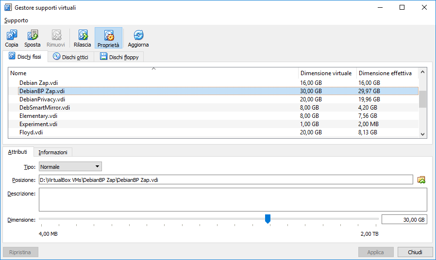
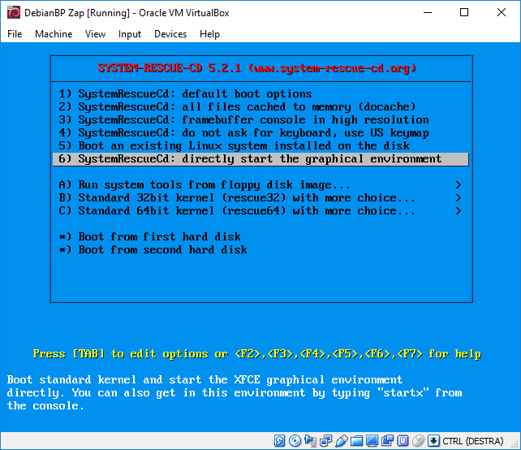

I have a VirtualBox machine with full disk encryption. The space for the root partition is almost finished.
Expand VirtualBox vdi size
Remove all snapshots or clone the machine. Make a backup copy.
Expand from command line
The command to resize the disk is
VBoxManage modifymedium <absolute path to file> --resize <size in MB>If VBoxManage is not in PATH add the full path
"C:\Program Files\Oracle\VirtualBox\VBoxManage" modifymedium disk "D:\VirtualBox VMs\DebianBP Zap\DebianBP Zap.vdi" --resize 40000Expand from VirtualBox GUI
- Open the application
- File -> Virtual Media Manager
- Click on Properties
- Select the disk
- Select the new size
- Click Apply

Live CD
- Download System rescue cd
- Attach the image to the virtual machine
- Boot
- Choose “start the graphical environment”

- Keymap for italian keyboard is 21
Resize
Original steps from stackexchange
Actual partitioning of sda is
- 1 256MB primary boot
- 2 32GB extended
- 5 32GB logical
Modified steps for my partition layout
open the encrypted volume
cryptsetup luksOpen /dev/sda5 crypt-volumeextend the partition
parted /dev/sda resizepart 2 100% resizepart 5 100% quitstop using the VG
# display attributes of volume groups, the name zap-bp-vg is from the "VG Name" vgdisplay # deactivate the VG vgchange -a n zap-bp-vgclose the encrypted volume
cryptsetup luksClose crypt-volumeopen it again
cryptsetup luksOpen /dev/sda5 crypt-volumeresize the LUKS volume to the available space
cryptsetup resize crypt-volumeActivate the VG
vgchange -a y zap-bp-vgResize the PV
pvresize /dev/mapper/crypt-volumeResize the LV for / to 100% of the free space
# display attributes of a logical volume, the name /dev/zap-bp-vg/root is from the "LV Path" lvdisplay lvresize -l+100%FREE /dev/zap-bp-vg/rootcheck the fs
# find the volume path ls /dev/mapper/ e2fsck -f /dev/mapper/zap--bg--vg-rootresize the filesystem (automatically uses 100% free space)
resize2fs /dev/mapper/zap--bg--vg-root
Reboot and remove the System rescue cd image.